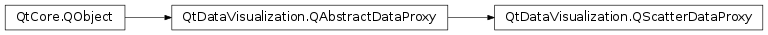

QtDataVisualization.QScatterDataProxy¶
Inherited by: QtDataVisualization.QItemModelScatterDataProxy
Synopsis¶
Functions¶
- def
addItem(item) - def
addItems(items) - def
array() - def
insertItem(index, item) - def
insertItems(index, items) - def
itemAt(index) - def
itemCount() - def
removeItems(index, removeCount) - def
series() - def
setItem(index, item) - def
setItems(index, items)
Signals¶
- def
arrayReset() - def
itemCountChanged(count) - def
itemsAdded(startIndex, count) - def
itemsChanged(startIndex, count) - def
itemsInserted(startIndex, count) - def
itemsRemoved(startIndex, count) - def
seriesChanged(series)
Detailed Description¶
-
class
PySide2.QtDataVisualization.QtDataVisualization.QScatterDataProxy([parent=nullptr])¶ Parameters: parent – PySide2.QtCore.QObject
-
PySide2.QtDataVisualization.QtDataVisualization.QScatterDataProxy.addItem(item)¶ Parameters: item – PySide2.QtDataVisualization.QtDataVisualization::QScatterDataItemReturn type: PySide2.QtCore.int
-
PySide2.QtDataVisualization.QtDataVisualization.QScatterDataProxy.addItems(items)¶ Parameters: items – Return type: PySide2.QtCore.int
-
PySide2.QtDataVisualization.QtDataVisualization.QScatterDataProxy.array()¶ Return type: QVector
-
PySide2.QtDataVisualization.QtDataVisualization.QScatterDataProxy.arrayReset()¶
-
PySide2.QtDataVisualization.QtDataVisualization.QScatterDataProxy.insertItem(index, item)¶ Parameters: - index –
PySide2.QtCore.int - item –
PySide2.QtDataVisualization.QtDataVisualization::QScatterDataItem
- index –
-
PySide2.QtDataVisualization.QtDataVisualization.QScatterDataProxy.insertItems(index, items)¶ Parameters: - index –
PySide2.QtCore.int - items –
- index –
-
PySide2.QtDataVisualization.QtDataVisualization.QScatterDataProxy.itemAt(index)¶ Parameters: index – PySide2.QtCore.intReturn type: PySide2.QtDataVisualization.QtDataVisualization::QScatterDataItem
-
PySide2.QtDataVisualization.QtDataVisualization.QScatterDataProxy.itemCount()¶ Return type: PySide2.QtCore.int
-
PySide2.QtDataVisualization.QtDataVisualization.QScatterDataProxy.itemCountChanged(count)¶ Parameters: count – PySide2.QtCore.int
-
PySide2.QtDataVisualization.QtDataVisualization.QScatterDataProxy.itemsAdded(startIndex, count)¶ Parameters: - startIndex –
PySide2.QtCore.int - count –
PySide2.QtCore.int
- startIndex –
-
PySide2.QtDataVisualization.QtDataVisualization.QScatterDataProxy.itemsChanged(startIndex, count)¶ Parameters: - startIndex –
PySide2.QtCore.int - count –
PySide2.QtCore.int
- startIndex –
-
PySide2.QtDataVisualization.QtDataVisualization.QScatterDataProxy.itemsInserted(startIndex, count)¶ Parameters: - startIndex –
PySide2.QtCore.int - count –
PySide2.QtCore.int
- startIndex –
-
PySide2.QtDataVisualization.QtDataVisualization.QScatterDataProxy.itemsRemoved(startIndex, count)¶ Parameters: - startIndex –
PySide2.QtCore.int - count –
PySide2.QtCore.int
- startIndex –
-
PySide2.QtDataVisualization.QtDataVisualization.QScatterDataProxy.removeItems(index, removeCount)¶ Parameters: - index –
PySide2.QtCore.int - removeCount –
PySide2.QtCore.int
- index –
-
PySide2.QtDataVisualization.QtDataVisualization.QScatterDataProxy.series()¶ Return type: PySide2.QtDataVisualization.QtDataVisualization::QScatter3DSeries
-
PySide2.QtDataVisualization.QtDataVisualization.QScatterDataProxy.seriesChanged(series)¶ Parameters: series – PySide2.QtDataVisualization.QtDataVisualization::QScatter3DSeries
-
PySide2.QtDataVisualization.QtDataVisualization.QScatterDataProxy.setItem(index, item)¶ Parameters: - index –
PySide2.QtCore.int - item –
PySide2.QtDataVisualization.QtDataVisualization::QScatterDataItem
- index –
-
PySide2.QtDataVisualization.QtDataVisualization.QScatterDataProxy.setItems(index, items)¶ Parameters: - index –
PySide2.QtCore.int - items –
- index –
© 2018 The Qt Company Ltd. Documentation contributions included herein are the copyrights of their respective owners. The documentation provided herein is licensed under the terms of the GNU Free Documentation License version 1.3 as published by the Free Software Foundation. Qt and respective logos are trademarks of The Qt Company Ltd. in Finland and/or other countries worldwide. All other trademarks are property of their respective owners.